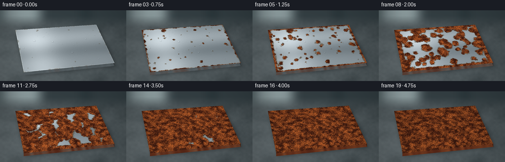
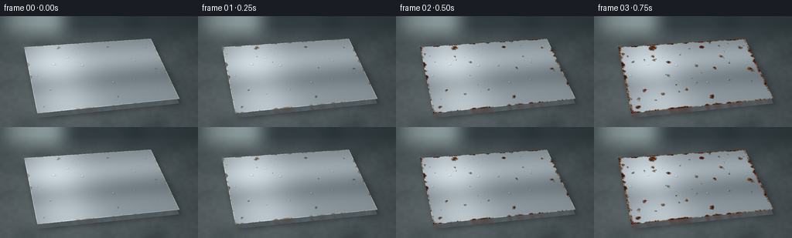
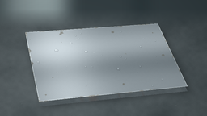

CODING AGENTS AS PIXEL WORLD MODELS
traex/GPT-6.1-Sol · phygen_157
点击播放 · 原生 RGB 像素
逐轮保存的候选
回放视频、检查图与代码变化。
每份候选均可单独播放。实际图片检查记录在下方工具轨迹中。
候选 01播放与检查图
点击播放 · 原生 RGB 像素
展开代码变化
--- 上一保存版本
+++ 本次保存版本
@@ -0,0 +1,173 @@
+from pathlib import Path
+import numpy as np
+from PIL import Image, ImageDraw, ImageFilter
+import artifact_io
+
+ROOT=Path(__file__).resolve().parent
+W,H,S=256,144,3
+w,h=W*S,H*S
+rng=np.random.default_rng(5317)
+y,x=np.mgrid[0:h,0:w].astype(np.float32)
+x/=S; y/=S
+
+def noise(gx,gy):
+ a=rng.random((gy,gx)).astype(np.float32)
+ return np.asarray(Image.fromarray(a,'F').resize((w,h),Image.Resampling.BICUBIC)).astype(np.float32)
+
+def polygon(points):
+ im=Image.new('L',(w,h)); ImageDraw.Draw(im).polygon([(round(a*S),round(b*S)) for a,b in points],fill=255)
+ return np.asarray(im,dtype=np.float32)/255
+
+# Perspective mapping of a machined rectangular coupon.
+pts=np.array([[31,40],[195,29],[232,107],[48,126]],float)
+A=[]; b=[]
+for (u,v),(px,py) in zip([(0,0),(1,0),(1,1),(0,1)],pts):
+ A += [[u,v,1,0,0,0,-px*u,-px*v],[0,0,0,u,v,1,-py*u,-py*v]]; b += [px,py]
+q=np.linalg.solve(A,b); mat=np.r_[q,1].reshape(3,3); inv=np.linalg.inv(mat)
+den=inv[2,0]*x+inv[2,1]*y+inv[2,2]
+u=(inv[0,0]*x+inv[0,1]*y+inv[0,2])/den
+v=(inv[1,0]*x+inv[1,1]*y+inv[1,2])/den
+inside=(u>=0)&(u<=1)&(v>=0)&(v<=1)
+mask=inside.astype(float)
+edge=np.minimum.reduce([u,1-u,v,1-v])
+
+def world_noise(gx,gy):
+ a=np.asarray(Image.fromarray(rng.random((gy,gx)).astype('float32'),'F').resize((1024,640),Image.Resampling.BICUBIC))
+ px=np.clip(u,0,1)*1023; py=np.clip(v,0,1)*639
+ ix=px.astype(int); iy=py.astype(int); jx=np.minimum(ix+1,1023); jy=np.minimum(iy+1,639)
+ dx=px-ix; dy=py-iy
+ return a[iy,ix]*(1-dx)*(1-dy)+a[iy,jx]*dx*(1-dy)+a[jy,ix]*(1-dx)*dy+a[jy,jx]*dx*dy
+
+large=world_noise(7,6); medium=world_noise(32,24); small=world_noise(115,75)
+grains=world_noise(450,270); fine=rng.normal(0,1,(h,w))
+# A damp concrete surface with an out-of-focus cool background.
+coarse=noise(12,9); grit=noise(210,135); mid=noise(55,35)
+bg=np.zeros((h,w,3),float)
+for k,col in enumerate([64,73,76]):
+ bg[:,:,k]=col + 13*(coarse-.5)+5*(mid-.5)+2.5*(grit-.5)
+bg += (11*np.exp(-((x-55)/135)**2))[...,None]
+# Distant, fog-softened window shapes.
+back=Image.new('RGB',(w,h),(52,63,67)); d=ImageDraw.Draw(back)
+d.rectangle([7*S,-20*S,81*S,41*S],fill=(145,161,163))
+d.rectangle([21*S,-10*S,25*S,45*S],fill=(69,80,82))
+d.rectangle([5*S,15*S,83*S,18*S],fill=(87,102,105))
+d.rectangle([170*S,-10*S,178*S,50*S],fill=(31,43,47))
+back=np.asarray(back.filter(ImageFilter.GaussianBlur(10*S)),float)
+blend=np.clip((35-y)/24,0,1)[...,None]
+bg=bg*(1-blend)+back*blend
+# Table perspective and soft falloff.
+bg += (12*np.exp(-((y-104)/57)**2)-6*(x/W)**2)[...,None]
+wet=4*np.exp(-((y-(127-.07*x))/10)**2)*np.exp(-((x-140)/93)**2)
+bg += wet[...,None]*np.array([.75,.88,1.0])
+# Contact shadow, cast down and right from the slab.
+sh=Image.new('L',(w,h)); sd=ImageDraw.Draw(sh)
+sd.polygon([(int((a+4)*S),int((b+7)*S)) for a,b in pts],fill=160)
+shadow=np.asarray(sh.filter(ImageFilter.GaussianBlur(4*S)),float)/255
+bg*=1-.55*shadow[...,None]
+front=polygon([(48,126),(232,107),(232,113),(48,132)])
+right=polygon([(195,29),(232,107),(232,113),(195,35)])
+# Metallic reflection, polished but with extremely fine directional machining traces.
+reflect=(25*np.exp(-((v-.29)/.19)**2)+45*np.exp(-((u-.20)/.22)**2)
+ -20*np.exp(-((v-.63)/.16)**2)-10*u+8*v)
+metal=np.stack([139+reflect,150+reflect,156+reflect],-1)
+brush=(np.sin(v*2050+medium*2)*.5 + np.sin(v*7180)*.27)
+metal += (brush+ .45*fine + 1.4*(small-.5))[...,None]
+# Faint, continuous manufacturing marks that disappear under the oxide.
+for sv in rng.uniform(.035,.96,22):
+ line=np.exp(-((v-sv)/.0005)**2)*rng.uniform(.5,2)
+ metal-=line[...,None]
+metal=np.clip(metal,0,255)
+
+# Spatially fixed corrosion nuclei: surface flaws, plus fast oxidation at edges.
+arrival=np.ones((h,w))*5
+seeds=[]
+for i in range(76):
+ su,sv=rng.uniform(.015,.985,2)
+ speed=rng.uniform(.105,.23)
+ start=rng.uniform(.00,.21)
+ seeds.append((su,sv,speed,start))
+ dist=np.sqrt((u-su)**2+((v-sv)*.65)**2)
+ arrival=np.minimum(arrival,dist/speed+start)
+# Edge corrosion appears first and eats inwards.
+arrival=np.minimum(arrival, np.maximum(edge,0)/.17+.035)
+arrival += .11*(medium-.5)+.065*(small-.5)+.023*(grains-.5)
+arrival=np.maximum(arrival,.021)
+
+# Oxide color, relief and deeply etched pits all come from one stable texture.
+rough= .5*medium+.34*small+.16*grains
+orange=np.clip((rough-.27)/.53,0,1)
+rust=np.stack([67+111*orange,29+62*orange,17+24*orange],-1)
+rust += (8*(large-.5))[...,None]*np.array([1.1,.6,.2])
+# Bump lighting produces tiny flakes with a bright upper lip and dark lower lip.
+height=.48*small+.38*grains+.14*medium
+gy,gx=np.gradient(height)
+relief=np.clip((-gx*1.0-gy*1.3)*S*27,-22,23)
+rust+=relief[...,None]*np.array([1,.72,.46])
+pits=np.clip((.255-grains)*10,0,1)*np.clip((.50-small)*5,0,1)
+rust*=1-.62*pits[...,None]
+# Fine, discontinuous, dark fissures between scales.
+crack=np.exp(-((small-.47)/.013)**2)*np.clip((medium-.55)*5,0,1)
+rust*=1-.24*crack[...,None]
+
+# Moisture beads are persistent but gently build and recede during the timelapse.
+drops=[]
+for i in range(34):
+ du,dv=rng.uniform(.04,.96,2)
+ p=mat@np.array([du,dv,1]); cx,cy=p[:2]/p[2]
+ drops.append((cx,cy,rng.uniform(.55,1.9),rng.uniform(0,6.28)))
+
+def add_drop(im,cx,cy,r,amount):
+ # Convex, translucent cap: dark refracted rim, soft interior, pinpoint reflection.
+ rx=r; ry=r*.59
+ xa=max(0,int((cx-rx-1)*S)); xb=min(w,int((cx+rx+1)*S)+1)
+ ya=max(0,int((cy-ry-1)*S)); yb=min(h,int((cy+ry+1)*S)+1)
+ xx=(x[ya:yb,xa:xb]-cx)/rx; yy=(y[ya:yb,xa:xb]-cy)/ry
+ rr=xx*xx+yy*yy; m=np.clip((1-rr)*10,0,1)*amount
+ z=np.sqrt(np.maximum(0,1-rr))
+ rim=np.exp(-((np.sqrt(rr)-.89)/.11)**2)
+ light=np.maximum(0,(-.43*xx-.51*yy+.74*z))**24
+ glint=np.exp(-((xx+.35)**2+(yy+.40)**2)/.018)
+ bottom=np.exp(-((xx-.15)**2+(yy-.52)**2)/.13)
+ sub=im[ya:yb,xa:xb]
+ drop=sub*(1-(.19*rim+.14*bottom)[...,None])+((2*z+115*light+90*glint)[...,None])*np.array([.89,.97,1.0])
+ im[ya:yb,xa:xb]=sub*(1-m[...,None])+drop*m[...,None]
+
+frames=[]
+for i in range(20):
+ t=i/19
+ age=t**1.26
+ coverage=np.clip((age-arrival)*30+.05,0,1)
+ # Dark oxide halos progress ahead of the orange, rough scale.
+ halo=np.clip((age-arrival+.045)*19,0,1)*(1-coverage)
+ tarnish=np.stack([89+12*large,83+9*large,67+7*large],-1)
+ surface=metal*(1-halo[...,None]) + tarnish*halo[...,None]
+ surface=surface*(1-coverage[...,None])+rust*coverage[...,None]
+ # Slightly uneven corroded perimeter; clean steel retains a crisp bevel.
+ edge_glint=np.exp(-((edge-.0022)/.0018)**2)*inside
+ surface += edge_glint[...,None]*(1-coverage[...,None])*np.array([56,56,53])
+ im=bg.copy()
+ side_n=9*(mid-.5)+3*(grit-.5)
+ side_met=np.stack([83+side_n,92+side_n,96+side_n],-1)
+ side_rust=np.stack([87+28*medium+side_n,40+18*medium+side_n*.65,23+8*medium+side_n*.3],-1)
+ side_age=np.clip(t*1.5-.14+(.5-medium)*.42,0,1)
+ side=side_met*(1-side_age[...,None])+side_rust*side_age[...,None]
+ im=im*(1-front[...,None])+side*front[...,None]
+ im=im*(1-right[...,None])+(side*.68)*right[...,None]
+ im=im*(1-mask[...,None])+surface*mask[...,None]
+ # Bright machined leading edge, progressively lost to rust.
+ lip=np.exp(-((v-.993)/.0025)**2)*inside
+ im+=lip[...,None]*(1-coverage[...,None])*16
+ for j,(cx,cy,r,phase) in enumerate(drops):
+ rr=r*(.80+.16*np.sin(phase+t*7.5))
+ # The beads remain clear, but fewer bright highlights survive a rough oxidized substrate.
+ add_drop(im,cx,cy,rr,.87-.19*t)
+ # Subtle wet beads on the surrounding workbench.
+ for cx,cy,r in [(18,110,.75),(27,129,.9),(218,131,1.0),(245,103,.8),(91,136,.65),(12,83,.7)]:
+ add_drop(im,cx,cy,r,.6)
+ # A restrained photographic vignette and soft, humid ambient fill.
+ vignette=1-.12*((x-126)/170)**2-.075*((y-73)/125)**2
+ im*=vignette[...,None]
+ im=np.clip(im,0,255).astype(np.uint8)
+ im=Image.fromarray(im).resize((W,H),Image.Resampling.LANCZOS)
+ frames.append(np.asarray(im))
+artifact_io.save(np.stack(frames),ROOT)
候选 02播放与检查图
点击播放 · 原生 RGB 像素


展开代码变化
--- 上一保存版本
+++ 本次保存版本
@@ -12,7 +12,7 @@
def noise(gx,gy):
a=rng.random((gy,gx)).astype(np.float32)
- return np.asarray(Image.fromarray(a,'F').resize((w,h),Image.Resampling.BICUBIC)).astype(np.float32)
+ return np.asarray(Image.fromarray(a).resize((w,h),Image.Resampling.BICUBIC)).astype(np.float32)
def polygon(points):
im=Image.new('L',(w,h)); ImageDraw.Draw(im).polygon([(round(a*S),round(b*S)) for a,b in points],fill=255)
@@ -32,7 +32,7 @@
edge=np.minimum.reduce([u,1-u,v,1-v])
def world_noise(gx,gy):
- a=np.asarray(Image.fromarray(rng.random((gy,gx)).astype('float32'),'F').resize((1024,640),Image.Resampling.BICUBIC))
+ a=np.asarray(Image.fromarray(rng.random((gy,gx)).astype('float32')).resize((1024,640),Image.Resampling.BICUBIC))
px=np.clip(u,0,1)*1023; py=np.clip(v,0,1)*639
ix=px.astype(int); iy=py.astype(int); jx=np.minimum(ix+1,1023); jy=np.minimum(iy+1,639)
dx=px-ix; dy=py-iy
@@ -114,7 +114,7 @@
for i in range(34):
du,dv=rng.uniform(.04,.96,2)
p=mat@np.array([du,dv,1]); cx,cy=p[:2]/p[2]
- drops.append((cx,cy,rng.uniform(.55,1.9),rng.uniform(0,6.28)))
+ drops.append((cx,cy,rng.uniform(2.2,2.9) if i < 5 else rng.uniform(.55,1.9),rng.uniform(0,6.28)))
def add_drop(im,cx,cy,r,amount):
# Convex, translucent cap: dark refracted rim, soft interior, pinpoint reflection.
@@ -141,7 +141,10 @@
halo=np.clip((age-arrival+.045)*19,0,1)*(1-coverage)
tarnish=np.stack([89+12*large,83+9*large,67+7*large],-1)
surface=metal*(1-halo[...,None]) + tarnish*halo[...,None]
- surface=surface*(1-coverage[...,None])+rust*coverage[...,None]
+ maturity=np.clip((age-arrival-.20)*1.8,0,1)
+ aged_rust=rust*(1-.14*maturity[...,None])
+ aged_rust*=1-.20*(pits*maturity)[...,None]
+ surface=surface*(1-coverage[...,None])+aged_rust*coverage[...,None]
# Slightly uneven corroded perimeter; clean steel retains a crisp bevel.
edge_glint=np.exp(-((edge-.0022)/.0018)**2)*inside
surface += edge_glint[...,None]*(1-coverage[...,None])*np.array([56,56,53])
可观测工具轨迹
实际执行的命令与返回图片。
命令 1exit 0
/bin/bash -lc 'ls -la && cat prompt.txt && cat GENERATION_RULES.md && cat task_spec.json'
命令 2exit 0
/bin/bash -lc "cat artifact_io.py && python - <<'PY'
import numpy,PIL
print('available')
PY"命令 3exit 0
/bin/bash -lc "cat > generate.py <<'PY'
from pathlib import Path
import numpy as np
from PIL import Image, ImageDraw, ImageFilter
import artifact_io
ROOT=Path(__file__).resolve().parent
W,H,S=256,144,3
w,h=W*S,H*S
rng=np.random.default_rng(5317)
y,x=np.mgrid[0:h,0:w].astype(np.float32)
x/=S; y/=S
def noise(gx,gy):
a=rng.random((gy,gx)).astype(np.float32)
return np.asarray(Image.fromarray(a,'F').resize((w,h),Image.Resampling.BICUBIC)).astype(np.float32)
def polygon(points):
im=Image.new('L',(w,h)); ImageDraw.Draw(im).polygon([(round(a*S),round(b*S)) for a,b in points],fill=255)
return np.asarray(im,dtype=np.float32)/255
# Perspective mapping of a machined rectangular coupon.
pts=np.array([[31,40],[195,29],[232,107],[48,126]],float)
A=[]; b=[]
for (u,v),(px,py) in zip([(0,0),(1,0),(1,1),(0,1)],pts):
A += [[u,v,1,0,0,0,-px*u,-px*v],[0,0,0,u,v,1,-py*u,-py*v]]; b += [px,py]
q=np.linalg.solve(A,b); mat=np.r_[q,1].reshape(3,3); inv=np.linalg.inv(mat)
den=inv[2,0]*x+inv[2,1]*y+inv[2,2]
u=(inv[0,0]*x+inv[0,1]*y+inv[0,2])/den
v=(inv[1,0]*x+inv[1,1]*y+inv[1,2])/den
inside=(u>=0)&(u<=1)&(v>=0)&(v<=1)
mask=inside.astype(float)
edge=np.minimum.reduce([u,1-u,v,1-v])
def world_noise(gx,gy):
a=np.asarray(Image.fromarray(rng.random((gy,gx)).astype('float32'),'F').resize((1024,640),Image.Resampling.BICUBIC))
px=np.clip(u,0,1)*1023; py=np.clip(v,0,1)*639
ix=px.astype(int); iy=py.astype(int); jx=np.minimum(ix+1,1023); jy=np.minimum(iy+1,639)
dx=px-ix; dy=py-iy
return a[iy,ix]*(1-dx)*(1-dy)+a[iy,jx]*dx*(1-dy)+a[jy,ix]*(1-dx)*dy+a[jy,jx]*dx*dy
large=world_noise(7,6); medium=world_noise(32,24); small=world_noise(115,75)
grains=world_noise(450,270); fine=rng.normal(0,1,(h,w))
# A damp concrete surface with an out-of-focus cool background.
coarse=noise(12,9); grit=noise(210,135); mid=noise(55,35)
bg=np.zeros((h,w,3),float)
for k,col in enumerate([64,73,76]):
bg[:,:,k]=col + 13*(coarse-.5)+5*(mid-.5)+2.5*(grit-.5)
bg += (11*np.exp(-((x-55)/135)**2))[...,None]
# Distant, fog-softened window shapes.
back=Image.new('RGB',(w,h),(52,63,67)); d=ImageDraw.Draw(back)
d.rectangle([7*S,-20*S,81*S,41*S],fill=(145,161,163))
d.rectangle([21*S,-10*S,25*S,45*S],fill=(69,80,82))
d.rectangle([5*S,15*S,83*S,18*S],fill=(87,102,105))
d.rectangle([170*S,-10*S,178*S,50*S],fill=(31,43,47))
back=np.asarray(back.filter(ImageFilter.GaussianBlur(10*S)),float)
blend=np.clip((35-y)/24,0,1)[...,None]
bg=bg*(1-blend)+back*blend
# Table perspective and soft falloff.
bg += (12*np.exp(-((y-104)/57)**2)-6*(x/W)**2)[...,None]
wet=4*np.exp(-((y-(127-.07*x))/10)**2)*np.exp(-((x-140)/93)**2)
bg += wet[...,None]*np.array([.75,.88,1.0])
# Contact shadow, cast down and right from the slab.
sh=Image.new('L',(w,h)); sd=ImageDraw.Draw(sh)
sd.polygon([(int((a+4)*S),int((b+7)*S)) for a,b in pts],fill=160)
shadow=np.asarray(sh.filter(ImageFilter.GaussianBlur(4*S)),float)/255
bg*=1-.55*shadow[...,None]
front=polygon([(48,126),(232,107),(232,113),(48,132)])
right=polygon([(195,29),(232,107),(232,113),(195,35)])
# Metallic reflection, polished but with extremely fine directional machining traces.
reflect=(25*np.exp(-((v-.29)/.19)**2)+45*np.exp(-((u-.20)/.22)**2)
-20*np.exp(-((v-.63)/.16)**2)-10*u+8*v)
metal=np.stack([139+reflect,150+reflect,156+reflect],-1)
brush=(np.sin(v*2050+medium*2)*.5 + np.sin(v*7180)*.27)
metal += (brush+ .45*fine + 1.4*(small-.5))[...,None]
# Faint, continuous manufacturing marks that disappear under the oxide.
for sv in rng.uniform(.035,.96,22):
line=np.exp(-((v-sv)/.0005)**2)*rng.uniform(.5,2)
metal-=line[...,None]
metal=np.clip(metal,0,255)
# Spatially fixed corrosion nuclei: surface flaws, plus fast oxidation at edges.
arrival=np.ones((h,w))*5
seeds=[]
for i in range(76):
su,sv=rng.uniform(.015,.985,2)
speed=rng.uniform(.105,.23)
start=rng.uniform(.00,.21)
seeds.append((su,sv,speed,start))
dist=np.sqrt((u-su)**2+((v-sv)*.65)**2)
arrival=np.minimum(arrival,dist/speed+start)
# Edge corrosion appears first and eats inwards.
arrival=np.minimum(arrival, np.maximum(edge,0)/.17+.035)
arrival += .11*(medium-.5)+.065*(small-.5)+.023*(grains-.5)
arrival=np.maximum(arrival,.021)
# Oxide color, relief and deeply etched pits all come from one stable texture.
rough= .5*medium+.34*small+.16*grains
orange=np.clip((rough-.27)/.53,0,1)
rust=np.stack([67+111*orange,29+62*orange,17+24*orange],-1)
rust += (8*(large-.5))[...,None]*np.array([1.1,.6,.2])
# Bump lighting produces tiny flakes with a bright upper lip and dark lower lip.
height=.48*small+.38*grains+.14*medium
gy,gx=np.gradient(height)
relief=np.clip((-gx*1.0-gy*1.3)*S*27,-22,23)
rust+=relief[...,None]*np.array([1,.72,.46])
pits=np.clip((.255-grains)*10,0,1)*np.clip((.50-small)*5,0,1)
rust*=1-.62*pits[...,None]
# Fine, discontinuous, dark fissures between scales.
crack=np.exp(-((small-.47)/.013)**2)*np.clip((medium-.55)*5,0,1)
rust*=1-.24*crack[...,None]
# Moisture beads are persistent but gently build and recede during the timelapse.
drops=[]
for i in range(34):
du,dv=rng.uniform(.04,.96,2)
p=mat@np.array([du,dv,1]); cx,cy=p[:2]/p[2]
drops.append((cx,cy,rng.uniform(.55,1.9),rng.uniform(0,6.28)))
def add_drop(im,cx,cy,r,amount):
# Convex, translucent cap: dark refracted rim, soft interior, pinpoint reflection.
rx=r; ry=r*.59
xa=max(0,int((cx-rx-1)*S)); xb=min(w,int((cx+rx+1)*S)+1)
ya=max(0,int((cy-ry-1)*S)); yb=min(h,int((cy+ry+1)*S)+1)
xx=(x[ya:yb,xa:xb]-cx)/rx; yy=(y[ya:yb,xa:xb]-cy)/ry
rr=xx*xx+yy*yy; m=np.clip((1-rr)*10,0,1)*amount
z=np.sqrt(np.maximum(0,1-rr))
rim=np.exp(-((np.sqrt(rr)-.89)/.11)**2)
light=np.maximum(0,(-.43*xx-.51*yy+.74*z))**24
glint=np.exp(-((xx+.35)**2+(yy+.40)**2)/.018)
bottom=np.exp(-((xx-.15)**2+(yy-.52)**2)/.13)
sub=im[ya:yb,xa:xb]
drop=sub*(1-(.19*rim+.14*bottom)[...,None])+((2*z+115*light+90*glint)[...,None])*np.array([.89,.97,1.0])
im[ya:yb,xa:xb]=sub*(1-m[...,None])+drop*m[...,None]
frames=[]
for i in range(20):
t=i/19
age=t**1.26
coverage=np.clip((age-arrival)*30+.05,0,1)
# Dark oxide halos progress ahead of the orange, rough scale.
halo=np.clip((age-arrival+.045)*19,0,1)*(1-coverage)
tarnish=np.stack([89+12*large,83+9*large,67+7*large],-1)
surface=metal*(1-halo[...,None]) + tarnish*halo[...,None]
surface=surface*(1-coverage[...,None])+rust*coverage[...,None]
# Slightly uneven corroded perimeter; clean steel retains a crisp bevel.
edge_glint=np.exp(-((edge-.0022)/.0018)**2)*inside
surface += edge_glint[...,None]*(1-coverage[...,None])*np.array([56,56,53])
im=bg.copy()
side_n=9*(mid-.5)+3*(grit-.5)
side_met=np.stack([83+side_n,92+side_n,96+side_n],-1)
side_rust=np.stack([87+28*medium+side_n,40+18*medium+side_n*.65,23+8*medium+side_n*.3],-1)
side_age=np.clip(t*1.5-.14+(.5-medium)*.42,0,1)
side=side_met*(1-side_age[...,None])+side_rust*side_age[...,None]
im=im*(1-front[...,None])+side*front[...,None]
im=im*(1-right[...,None])+(side*.68)*right[...,None]
im=im*(1-mask[...,None])+surface*mask[...,None]
# Bright machined leading edge, progressively lost to rust.
lip=np.exp(-((v-.993)/.0025)**2)*inside
im+=lip[...,None]*(1-coverage[...,None])*16
for j,(cx,cy,r,phase) in enumerate(drops):
rr=r*(.80+.16*np.sin(phase+t*7.5))
# The beads remain clear, but fewer bright highlights survive a rough oxidized substrate.
add_drop(im,cx,cy,rr,.87-.19*t)
# Subtle wet beads on the surrounding workbench.
for cx,cy,r in [(18,110,.75),(27,129,.9),(218,131,1.0),(245,103,.8),(91,136,.65),(12,83,.7)]:
add_drop(im,cx,cy,r,.6)
# A restrained photographic vignette and soft, humid ambient fill.
vignette=1-.12*((x-126)/170)**2-.075*((y-73)/125)**2
im*=vignette[...,None]
im=np.clip(im,0,255).astype(np.uint8)
im=Image.fromarray(im).resize((W,H),Image.Resampling.LANCZOS)
frames.append(np.asarray(im))
artifact_io.save(np.stack(frames),ROOT)
PY
python generate.py"命令 4exit 0
/bin/bash -lc "python - <<'PY'
p='generate.py'
s=open(p).read().replace(\"Image.fromarray(a,'F')\", \"Image.fromarray(a)\").replace(\"Image.fromarray(rng.random((gy,gx)).astype('float32'),'F')\", \"Image.fromarray(rng.random((gy,gx)).astype('float32'))\")
s=s.replace(\"drops.append((cx,cy,rng.uniform(.55,1.9),rng.uniform(0,6.28)))\", \"drops.append((cx,cy,rng.uniform(2.2,2.9) if i < 5 else rng.uniform(.55,1.9),rng.uniform(0,6.28)))\")
s=s.replace(\"surface=surface*(1-coverage[...,None])+rust*coverage[...,None]\", \"maturity=np.clip((age-arrival-.20)*1.8,0,1)\\n aged_rust=rust*(1-.14*maturity[...,None])\\n aged_rust*=1-.20*(pits*maturity)[...,None]\\n surface=surface*(1-coverage[...,None])+aged_rust*coverage[...,None]\")
open(p,'w').write(s)
PY
python generate.py
command -v ffmpeg || true"视觉工具实际返回图片 1

视觉工具实际返回图片 2

保存候选 2 份；完成命令 4 次；可验证图片返回 2 张。原始 API 响应与完整日志保留在本地。